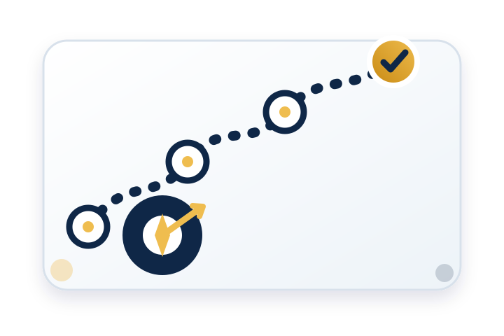

Apprendre
Choisissez une formation, un certificat ou un parcours d’apprentissage structuré.
Si vous découvrez ConsuTrain, cette page vous aide à choisir le bon point de départ : formation, certificat, atelier pratique, parcours d’apprentissage, outils, ressources ou accompagnement sur mesure.

Choisissez une formation, un certificat ou un parcours d’apprentissage structuré.
Commencez par un atelier court, un outil pratique ou une ressource prête à l’emploi.
Optez pour une consultation ou une formation sur mesure lorsque votre besoin exige un accompagnement direct.
Huit accès rapides vous conduisent directement vers la rubrique la plus utile.
Explorez les formations disponibles et choisissez le thème le plus proche de votre besoin professionnel ou organisationnel.
Des formations courtes gratuites peuvent mener à un test et à un certificat numérique après validation des conditions.
Des ateliers ciblés pour appliquer rapidement une méthode ou un outil en planification, performance, qualité, transformation numérique ou gestion de projet.
Suivez des parcours structurés combinant articles, outils, ressources et mise en pratique.
Suivez les derniers articles pour comprendre les tendances du management numérique, de l’IA et de l’automatisation.
Utilisez des outils pratiques pour diagnostiquer, planifier, évaluer ou structurer vos idées.
Accédez à des modèles prêts à l’emploi pour planifier, suivre, analyser ou préparer vos documents de management.
Découvrez des ressources sélectionnées pour enrichir vos pratiques en management et développement organisationnel.
Passez de la définition du besoin à l’apprentissage et à la mise en pratique, puis demandez un appui si nécessaire.
Choisissez le résultat que vous souhaitez atteindre maintenant.
Formation, certificat, atelier, parcours, outil ou ressource.
Utilisez le contenu sur une situation ou un document réel.
Sollicitez un accompagnement adapté lorsque le besoin devient plus précis.
Décrivez votre besoin et nous vous aiderons à choisir le bon point de départ : formation, atelier, consultation, outil ou contenu d’apprentissage.